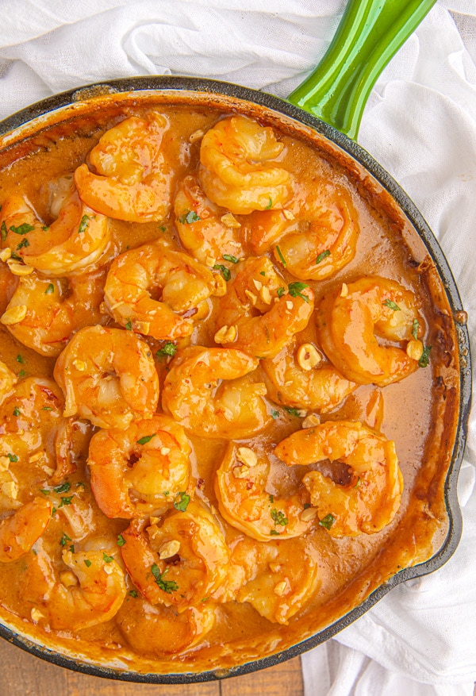

Home
Peanut Shrimp Recipe

Description
This peanut shrimp recipe is so peanuty and shrimpy!
Ingredients
Peanut sauce
- 1/2 cup peanut butter
- 1 tablespoon Sriracha
- 2 tablespoon brown sugar
- 1/2 cup soy sauce
- Freshly ground ginger
- Hot water to thin
Shrimp
- 1 pound shrimp
- 1/2 teaspoon garlic powder
- 1 tablespoon olive oil
- Salt and pepper
Steps
- Rinse the shrimp in cold water and pat dry. Heat a splash of olive oil over medium heat and spread shrimp in a single layer in the pan. Season with garlic powder, salt, and pepper.
- Meanwhile, mix all of the peanut sauce ingredients in a bowl. If needed, add hot water to help combine ingredients or to thin the sauce.
- Once the shrimp is opaque, remove from heat. Serve with fresh rice and pour sauce on top.